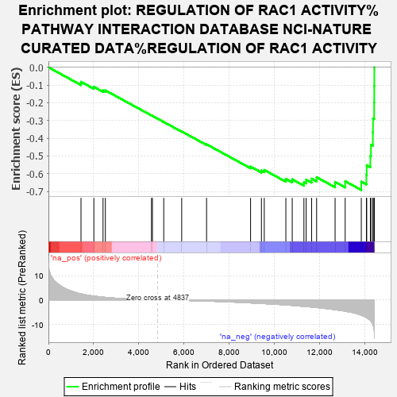
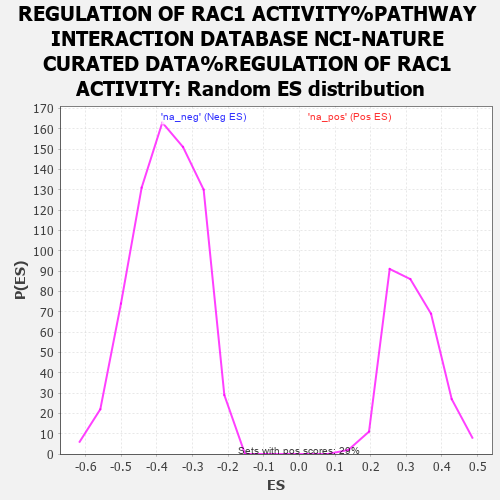

| | | Dataset | MBD2KO_post.rnk |
| Phenotype | NoPhenotypeAvailable |
| Upregulated in class | na_neg |
| GeneSet | REGULATION OF RAC1 ACTIVITY%PATHWAY INTERACTION DATABASE NCI-NATURE CURATED DATA%REGULATION OF RAC1 ACTIVITY |
| Enrichment Score (ES) | -0.69158775 |
| Normalized Enrichment Score (NES) | -1.8464632 |
| Nominal p-value | 0.0 |
| FDR q-value | 0.027517369 |
| FWER p-Value | 0.304 |
Table: GSEA Results Summary

Fig 1: Enrichment plot: REGULATION OF RAC1 ACTIVITY%PATHWAY INTERACTION DATABASE NCI-NATURE CURATED DATA%REGULATION OF RAC1 ACTIVITY
Profile of the Running ES Score & Positions of GeneSet Members on the Rank Ordered List
| PROBE | GENE SYMBOL | GENE_TITLE | RANK IN GENE LIST | RANK METRIC SCORE | RUNNING ES | CORE ENRICHMENT | | 1 | RACGAP1 | | | 1442 | 2.462 | -0.0818 | No |
| 2 | CHN2 | | | 2012 | 1.497 | -0.1102 | No |
| 3 | EPS8 | | | 2418 | 1.081 | -0.1303 | No |
| 4 | RAC1 | | | 2521 | 0.995 | -0.1300 | No |
| 5 | SOS1 | | | 4565 | 0.060 | -0.2714 | No |
| 6 | CHN1 | | | 4606 | 0.049 | -0.2738 | No |
| 7 | ARHGAP9 | | | 5107 | -0.050 | -0.3082 | No |
| 8 | TIAM2 | | | 5902 | -0.224 | -0.3616 | No |
| 9 | TRIO | | | 7004 | -0.529 | -0.4341 | No |
| 10 | SPATA13 | | | 8953 | -1.288 | -0.5598 | No |
| 11 | ARHGAP1 | | | 9434 | -1.519 | -0.5818 | No |
| 12 | DOCK6 | | | 9559 | -1.587 | -0.5787 | No |
| 13 | RAP1GDS1 | | | 10516 | -2.122 | -0.6293 | No |
| 14 | ARHGEF2 | | | 10798 | -2.320 | -0.6316 | No |
| 15 | ABI1 | | | 11316 | -2.728 | -0.6473 | Yes |
| 16 | VAV2 | | | 11413 | -2.795 | -0.6332 | Yes |
| 17 | ARHGDIA | | | 11658 | -2.984 | -0.6280 | Yes |
| 18 | ARHGAP17 | | | 11878 | -3.184 | -0.6196 | Yes |
| 19 | ABR | | | 12697 | -4.087 | -0.6461 | Yes |
| 20 | ARHGEF7 | | | 13143 | -4.706 | -0.6421 | Yes |
| 21 | MCF2 | | | 13857 | -6.316 | -0.6448 | Yes |
| 22 | VAV1 | | | 14083 | -7.323 | -0.6061 | Yes |
| 23 | DEF6 | | | 14097 | -7.416 | -0.5520 | Yes |
| 24 | VAV3 | | | 14259 | -8.545 | -0.4998 | Yes |
| 25 | RALBP1 | | | 14284 | -8.768 | -0.4365 | Yes |
| 26 | PREX1 | | | 14370 | -10.261 | -0.3663 | Yes |
| 27 | BCR | | | 14376 | -10.503 | -0.2887 | Yes |
| 28 | DOCK2 | | | 14427 | -12.548 | -0.1992 | Yes |
| 29 | ARHGEF6 | | | 14430 | -12.640 | -0.1056 | Yes |
| 30 | ELMO1 | | | 14434 | -14.278 | 0.0001 | Yes |
Table: GSEA details [plain text format]

Fig 2: REGULATION OF RAC1 ACTIVITY%PATHWAY INTERACTION DATABASE NCI-NATURE CURATED DATA%REGULATION OF RAC1 ACTIVITY: Random ES distribution
Gene set null distribution of ES for REGULATION OF RAC1 ACTIVITY%PATHWAY INTERACTION DATABASE NCI-NATURE CURATED DATA%REGULATION OF RAC1 ACTIVITY